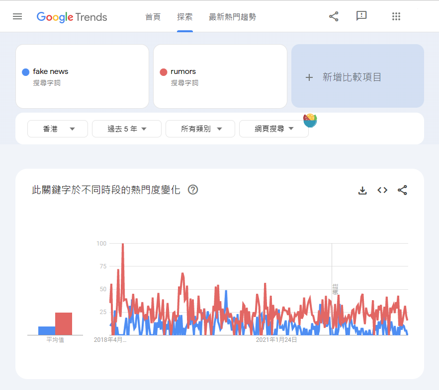
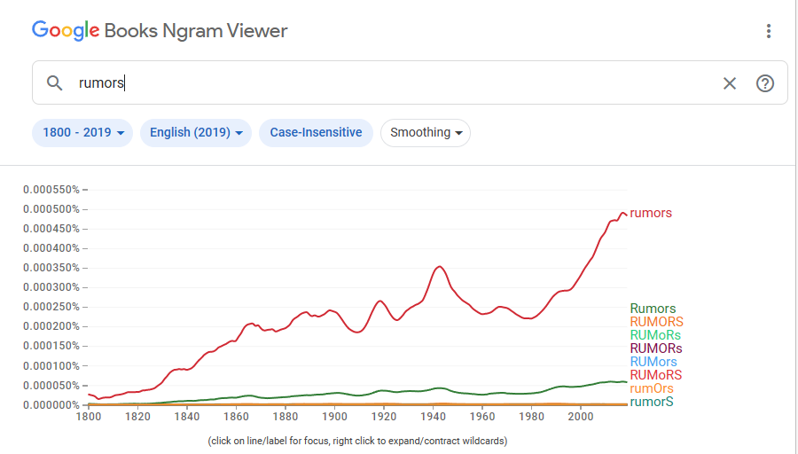
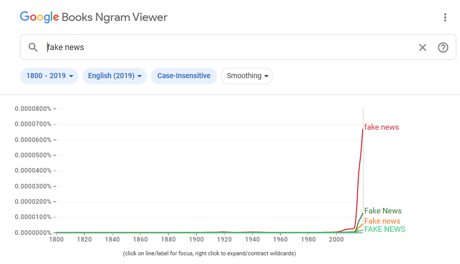

In this page, we will give the information about Fake News, the negative impact of fake news and ways to avoid fake news. Our goal is to let the public have a better understanding about fake news since fake news can be easily spread everywhere.
Mariam-Webster:News reports that are intentionally false or misleading
Oxford Dictionary False stories that appear to be news, spread on the internet or using other media, usually created to influence political views or as a joke
Collins DictionaryFalse, often sensational, information disseminated under the guise of news reporting
Keywords:False, misleading, intentionally
1. False information that is spread, regardless of intent to mislead or manipulate,Unintentional Misinformation
2. False information which is intended to mislead or manipulate,i.e. Intentional Misinformation
People keep worrying about fake news and rumors, but the worrying descends along with the development of technology. The fake news and rumors can be clarified/confirmed by the media rapidly because of the fast dissemination of the message. According to the trends below, the times of searching fake news/rumors are decreasing.

While the dissemination of the message is fast, there are more studies about fake news and rumors.


Reason that fake news and rumors emerge